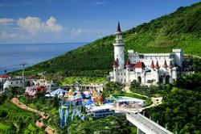
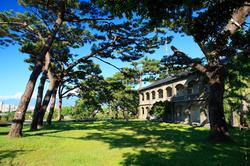
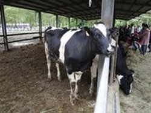

<div id="main-wrap">
        <div class="container">
   			<div id="wsite-content" class="wsite-elements wsite-not-footer">
	<h2 class="wsite-content-title" id="service" style="text-align:left;"><font color="#ed890e">服務&amp;聯絡 Service</font></h2>

	<div class="paragraph" style="text-align:left;">
		<strong>服務項目：</strong><br>
		1. 門票優惠券(海洋公園／兆豐農場／賞鯨／溯溪)<br>
		2. 套裝行程(含接駁)，一日遊／半日遊，行程可自行規劃<br>
		3. 火車站的來回接送
	</div>

	<div class="wsite-spacer" style="height:20px;"></div>

	<div class="contact-card">
		<p class="contact-card__title">聯絡資訊</p>
		<p>訂房專線：<a href="tel:03-826-0006">03-826-0006</a>、<a href="tel:0939321665">0939321665</a> 王小姐</p>
		<p>LINE ID：<a href="http://line.me/ti/p/zzIpG1ziYN" target="_blank">flyfly555</a>｜Wechat ID：happly-fly</p>
		<p>Facebook：<a href="https://www.facebook.com/slowfly5566" target="_blank">www.facebook.com/slowfly5566</a></p>
		<p>花蓮民宿合法登記第1346號</p>
	</div>

	<div class="wsite-spacer" style="height:40px;"></div>
	<hr style="width:100%;clear:both;visibility:hidden;"></hr>

	<h2 class="wsite-content-title" id="attractions" style="text-align:left;"><font color="#ed890e">週邊景點 Surroundings</font></h2>

	<div><div class="wsite-multicol"><div class="wsite-multicol-table-wrap" style="margin:0 -15px;">
	<table class="wsite-multicol-table">
		<tbody class="wsite-multicol-tbody">
			<tr class="wsite-multicol-tr">
				<td class="wsite-multicol-col" style="width:50%; padding:0 15px;">


<div class="paragraph" style="text-align:left;"><font color="#fb1e1e"><strong>10分鐘路程：<br />花蓮市區(東大門夜市)、鐵道文物館、三棧溪風景區、知卡宣公園、慈濟精舍、七星潭風景區、松園別館</strong></font></div>


				</td>				<td class="wsite-multicol-col" style="width:50%; padding:0 15px;">


<div class="paragraph" style="text-align:left;"><strong><font color="#f3e03b">20分鐘路程：</font><br /><font color="#f3e03b">美崙山公園、將軍府、慈修院、林森步道</font></strong></div>


				</td>			</tr>
		</tbody>
	</table>
</div></div></div>

<div class="paragraph" style="text-align:left;"><font color="#50c206"><strong>30分鐘路程：<br />太魯閣風景區、鯉魚潭、金針花場、林田山文化園區、鳳林環保科技園區、山度空間、海岸谷</strong></font></div>

<h2 class="wsite-content-title" style="text-align:left;"><font color="#8c48b7">熱門景點Hot Spot</font></h2>

<div class="promo-highlights">
	<a class="promo-card" href="https://www.facebook.com/fargloryhop/photos/a.276948825797/10156485622560798/?type=3" target="_blank">
		
		<div class="promo-card__body"><p class="promo-card__title">遠雄海洋公園</p></div>
	</a>
	<a class="promo-card" href="http://www.taroko.gov.tw/zhTW/" target="_blank">
		
		<div class="promo-card__body"><p class="promo-card__title">太魯閣國家公園・清水斷崖</p></div>
	</a>
	<a class="promo-card" href="http://www.yoshino793.com.tw/index.html" target="_blank">
		
		<div class="promo-card__body"><p class="promo-card__title">慈修院</p></div>
	</a>
	<a class="promo-card" href="http://www.pinegarden.com.tw/" target="_blank">
		
		<div class="promo-card__body"><p class="promo-card__title">松園別館</p></div>
	</a>
	<a class="promo-card" href="http://library.taiwanschoolnet.org/cyberfair2003/C0325970113/3-10.htm" target="_blank">
		
		<div class="promo-card__body"><p class="promo-card__title">七星潭風景區</p></div>
	</a>
	<a class="promo-card" href="https://www.erv-nsa.gov.tw/zh-tw/attractions/detail/48" target="_blank">
		
		<div class="promo-card__body"><p class="promo-card__title">瑞穗牧場</p></div>
	</a>
</div>
</div>

        </div><!-- end container -->
    </div><!-- end main-wrap -->
